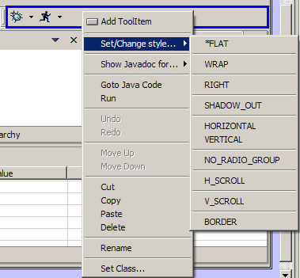
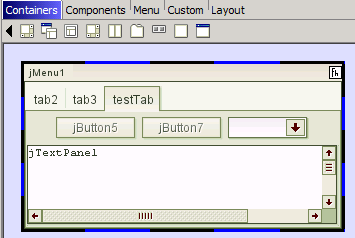
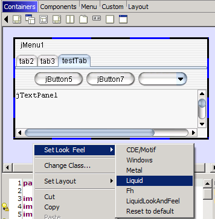

Setting SWT Styles
The SWT controls have various styles
which can be used in various combinations to produce a large range of
variations of the basic controls. You can set and change the style
parameter for a SWT component using the "Set/change style..." option in
the right-click context menu. The menu is sub-divided into groups of
style values, and when a style has been set, an asterisk appears by
it's name. For a Button, for instance, there are four groups -
"ARROW/CHECK/PUSH/RADIO/TOGGLE", "FLAT", "UP/DOWN/LEFT/RIGHT/CENTER"
and "BORDER" - and any one of the styles in the four groups may be
selected, eg PUSH + FLAT + BORDER. Clicking on a style will toggle it
between selected and not-selected, and clicking on a style in a group
when a different style in that group is already selected will replace
the selected style. Simple experimentation should make the operation of
the menu clear.

Setting Swing LookAndFeel
You can change the LookAndFeel
for Swing forms by right-clicking anywhere on the form and choosing one
of the installed LookAndFeels. The L&F will change in the form
editor, and the required code will be generated. To revert to not
setting any L&F simply choose the "Reset to default" L&F option.
Sometimes changing between look and feels may not correctly render the
components, but closing and re-opening the editor should correct this.
To add in a new LookAndFeel to the standard ones, download one (javootoo.com
has lots of them), then add the jar file for that L&F to your JRE's /lib/ext folder. You also
need to add a few lines to your JRE's /lib/swing.properties file. Here is
an example swing.properties file (on Windows with the Liquid L&F and the Fh L&F installed):
swing.installedlafs = motif,windows,metal,liquid,fh
swing.installedlaf.motif.name = CDE/Motif
swing.installedlaf.motif.class = com.sun.java.swing.plaf.motif.MotifLookAndFeel
swing.installedlaf.windows.name = Windows
swing.installedlaf.windows.class = com.sun.java.swing.plaf.windows.WindowsLookAndFeel
swing.installedlaf.metal.name = Metal
swing.installedlaf.metal.class = javax.swing.plaf.metal.MetalLookAndFeel
swing.installedlaf.liquid.name = Liquid
swing.installedlaf.liquid.class = com.birosoft.liquid.LiquidLookAndFeel
swing.installedlaf.fh.name = Fh
swing.installedlaf.fh.class = com.shfarr.ui.plaf.fh.FhLookAndFeel
Here's an example of using the Fh and Liquid LookAndFeels in Jigloo.


Button Groups
To add multiple JRadioButtons to
a ButtonGroup, first add a ButtonGroup to the "Non-Visual components"
node, using the "ButtonGroup" icon in the component palette. Then
multi-select the JRadioButtons and change their "buttonGroup" property
to be the name of the ButtonGroup you just added.
NonVisual and Extra Components
You can add custom classes to
both the "NonVisual" and "Extra" nodes in the Outline view. In
addition, you can add ButtonGroups to the Non-visual node using the
"ButtonGroup" icon in the component palette, and you can add
JPopupMenus, JDialogs and JWindows to the "Extra components" node. None
of the components under these nodes will be displayed in the GUI
editor, but their properties will be editable, and code will be
generated for them. For instance, you could design multiple JPopupMenus
and call their setVisible methods from your own code when needed.
Tab names
Tab names in JTabbedPane
sub-components are something of a special case, since they are not a
property of the sub-component. To set a tab name, simply right-click on
the tab and choose the "Set Tab Name" context menu option.